Además de elegir el tipo de gráfica, podemos utilizar propiedades visuales para representar información adicional. Estas propiedades reciben el nombre de estéticas (aesthetics) y permiten asociar variables con colores, formas, tamaños o transparencia.
¿Qué son las estéticas?
Las estéticas establecen una correspondencia entre las variables del conjunto de datos y características visuales de la gráfica.
Las más comunes son:
x y y: posición en los ejes.
color: color de puntos o líneas.
shape: forma de los puntos.
size: tamaño.
alpha: transparencia.
Por ejemplo:
library(ggplot2)ggplot( penguins,aes(x = bill_len,y = bill_dep,color = species )) +geom_point(size =2, alpha =0.7) +labs(title ="Relación entre la longitud del pico y aleta de los pingüinos",x ="Longitud del pico (mm)",y ="Longitud de la aleta (mm)" ) +theme_minimal()
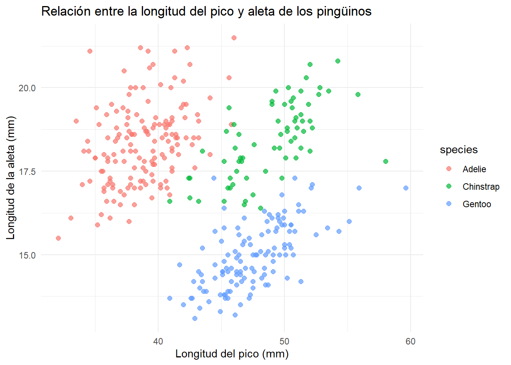
En este caso, el color está determinado por la variable species.
Colores
El color es una de las estéticas más útiles en una gráfica. Nos permite:
distinguir grupos;
representar valores numéricos;
resaltar patrones;
mejorar la comunicación visual.
En ggplot2, el color puede usarse de dos formas principales:
Como una estética mapeada a una variable, dentro de aes().
Como una propiedad fija, fuera de aes().
library(dplyr)
Color como estética
Cuando colocamos color dentro de aes(), le estamos diciendo a ggplot2 que el color depende de una variable del conjunto de datos.
ggplot( penguins,aes(x = bill_len,y = flipper_len,color = species )) +geom_point(size =2, alpha =0.7) +labs(title ="Relación entre la longitud del pico y aleta de los pingüinos",x ="Longitud del pico (mm)",y ="Longitud de la aleta (mm)" ) +theme_minimal()
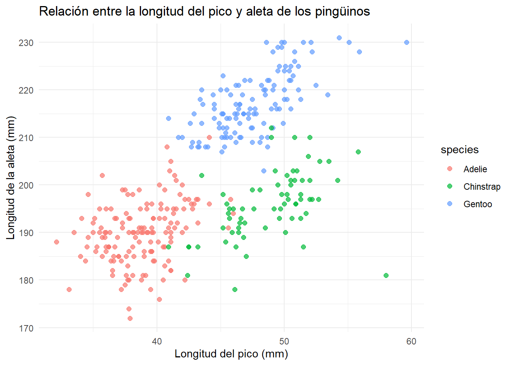
En este caso, cada especie aparece con un color diferente. Esto facilita comparar si las especies se agrupan de manera distinta según la longitud del pico y la longitud de la aleta.
También podemos agregar una tendencia por especie:
ggplot( penguins,aes(x = bill_len,y = flipper_len,color = species )) +geom_point(size =2, alpha =0.7) +geom_smooth(method ="lm") +labs(title ="Relación entre la longitud del pico y aleta de los pingüinos",x ="Longitud del pico (mm)",y ="Longitud de la aleta (mm)" ) +theme_minimal()
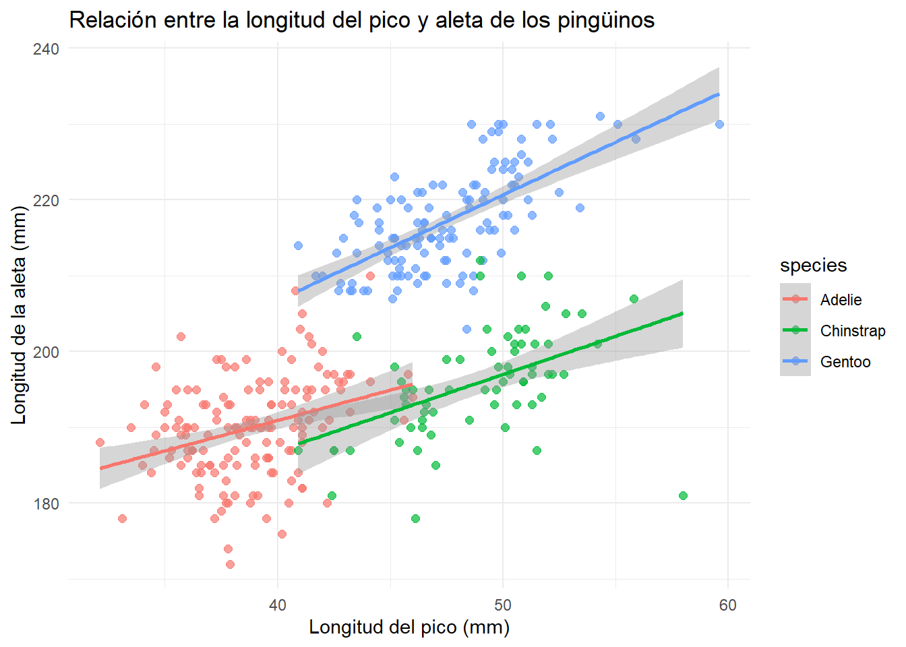
Aquí el color no solamente afecta a los puntos, sino también a las líneas de tendencia.
Color fijo
Si queremos que todos los puntos tengan el mismo color, el argumento debe ir fuera de aes().
ggplot( penguins,aes(x = bill_len,y = flipper_len )) +geom_point(size =2, alpha =0.7, color ="steelblue") +labs(title ="Relación entre la longitud del pico y aleta de los pingüinos",x ="Longitud del pico (mm)",y ="Longitud de la aleta (mm)" ) +theme_minimal()
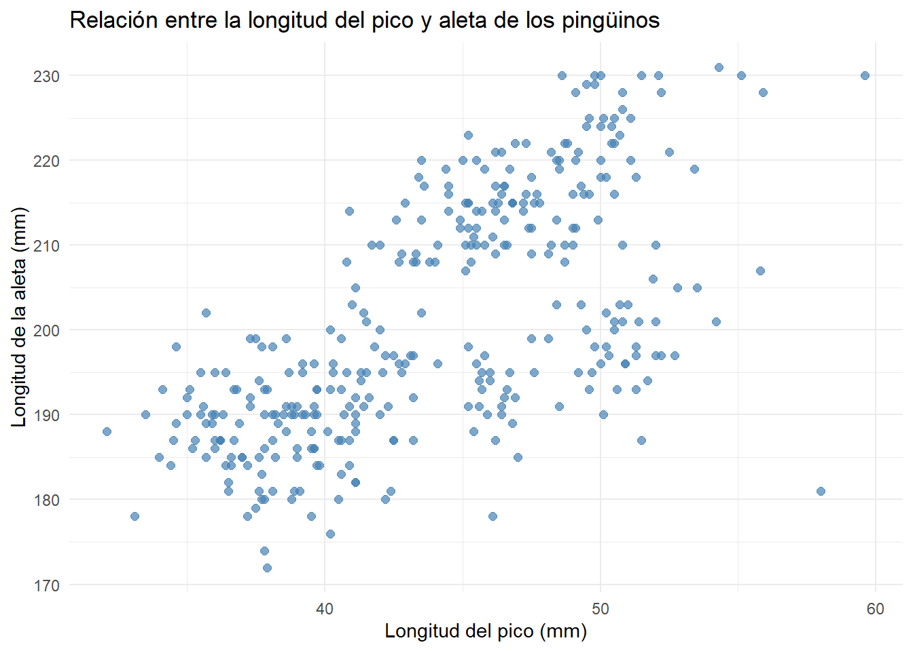
Important
Dentro de aes() usamos variables del conjunto de datos.
Fuera de aes() usamos valores fijos.
Guardar una gráfica como objeto
Una práctica común es guardar una gráfica base y después agregarle nuevas capas.
p_penguins <-ggplot( penguins,aes(x = bill_len,y = bill_dep,color = species )) +geom_point(size =2, alpha =0.8) +labs(title ="Medidas del pico de los pingüinos",x ="Longitud del pico (mm)",y ="Profundidad del pico (mm)",color ="Especie" )p_penguins
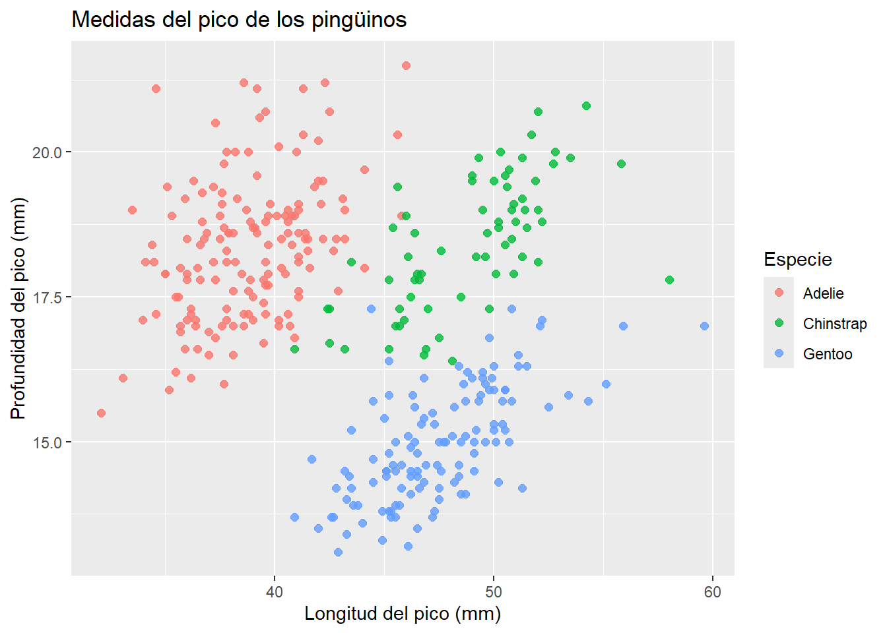
Ahora podemos reutilizar p_penguins y modificar únicamente la escala de color.
Cambiar colores manualmente
Por defecto, ggplot2 asigna colores automáticamente. Sin embargo, podemos elegir colores específicos con scale_color_manual().
Esto es útil cuando queremos usar colores más contrastantes o una paleta específica.
Note
También existe scale_fill_manual(), que se usa cuando la estética es fill, por ejemplo en barras, histogramas, diagramas de caja o violines.
Color para variables numéricas
El color no solamente sirve para variables categóricas. También puede representar variables numéricas.
ggplot( penguins,aes(x = bill_len,y = bill_dep,color = body_mass )) +geom_point(size =2) +labs(title ="Medidas del pico de los pingüinos",x ="Longitud del pico (mm)",y ="Profundidad del pico (mm)",color ="Masa corporal (g)" )
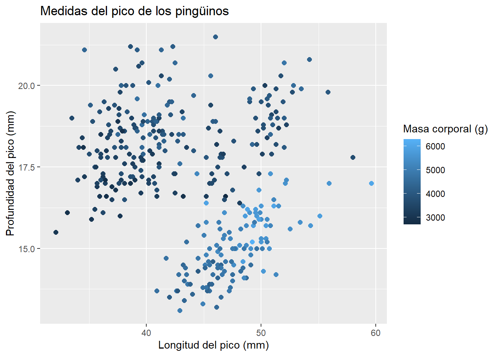
En este caso, el color representa una escala continua: pingüinos con menor o mayor masa corporal.
Gradientes de color
Podemos controlar el gradiente usando scale_color_gradient().
ggplot( penguins,aes(x = bill_len,y = bill_dep,color = body_mass )) +geom_point(size =2) +scale_color_gradient(low ="lightblue",high ="darkblue" ) +labs(title ="Medidas del pico de los pingüinos",x ="Longitud del pico (mm)",y ="Profundidad del pico (mm)",color ="Masa corporal (g)" )
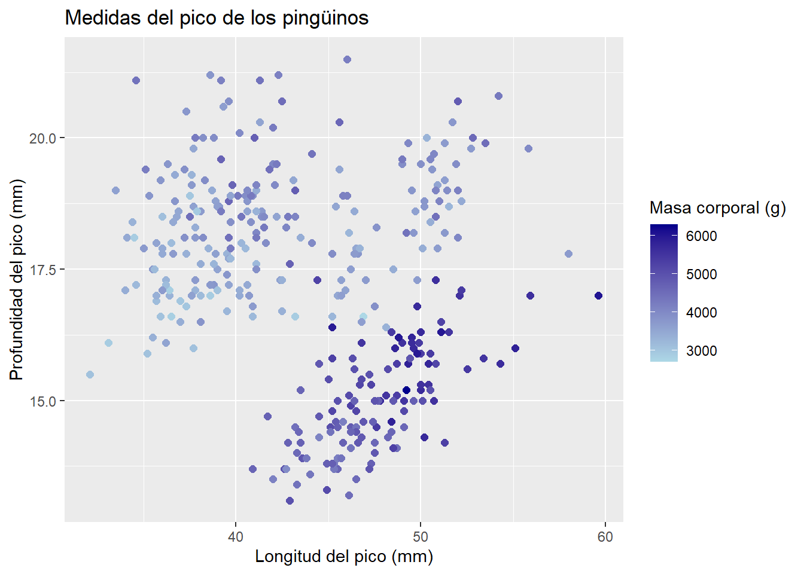
También podemos usar una transformación, por ejemplo log10, si los valores tienen una escala muy desigual.
ggplot( penguins,aes(x = bill_len,y = bill_dep,color =log10(body_mass) )) +geom_point(size =2) +scale_color_gradient(low ="blue",high ="red" ) +labs(title ="Medidas del pico de los pingüinos",x ="Longitud del pico (mm)",y ="Profundidad del pico (mm)",color ="log10(masa corporal)" )
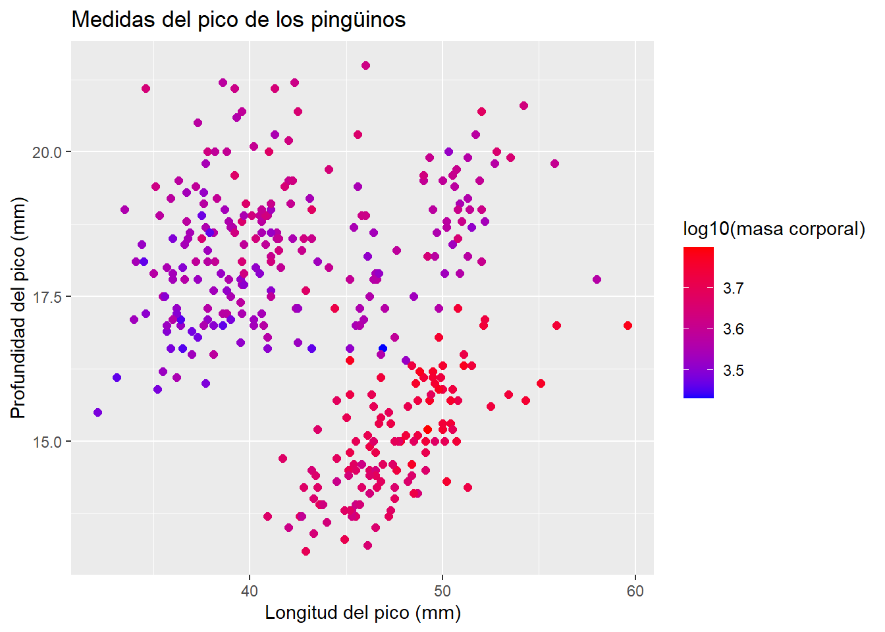
Gradientes con punto medio
Cuando queremos mostrar valores por debajo y por encima de un punto de referencia, podemos usar scale_color_gradient2().
ggplot( penguins,aes(x = bill_len,y = bill_dep,color = body_mass )) +geom_point(size =2) +scale_color_gradient2(low ="blue",mid ="white",high ="red",midpoint =mean(penguins$body_mass, na.rm =TRUE) ) +labs(title ="Medidas del pico de los pingüinos",x ="Longitud del pico (mm)",y ="Profundidad del pico (mm)",color ="Masa corporal (g)" )
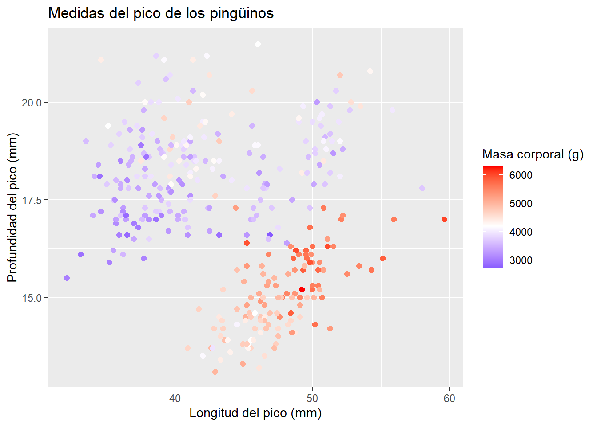
Este tipo de escala es útil cuando hay un valor central importante, por ejemplo cero, un promedio o una referencia biológica.
Usar paletas de colores
En lugar de elegir colores manualmente, podemos usar paletas ya diseñadas.
Una opción común es el paquete RColorBrewer.
library(RColorBrewer)display.brewer.all()
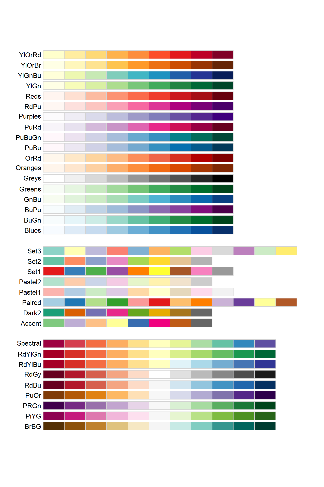
Para una variable categórica, podemos usar scale_color_brewer().
p_penguins +scale_color_brewer(palette ="Dark2")
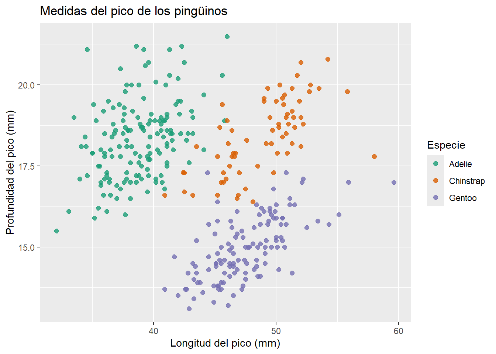
Paletas viridis
Las paletas viridis son muy útiles porque suelen funcionar bien en escala de grises y son más accesibles para personas con distintos tipos de daltonismo.
Para variables categóricas usamos scale_color_viridis_d().
p_penguins +scale_color_viridis_d()
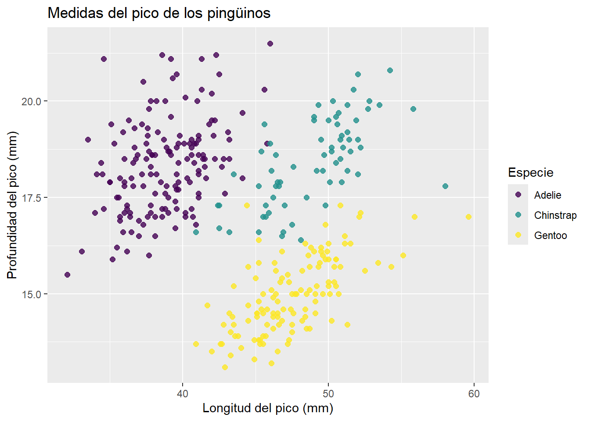
La d viene de discrete, porque species es una variable categórica.
Para variables continuas usamos scale_color_viridis_c().
No todas las combinaciones de colores son igualmente fáciles de interpretar. Algunas paletas pueden ser confusas para personas con daltonismo o pueden perder información al imprimirse en escala de grises.
Por eso, cuando la gráfica sea para comunicación pública, artículos o presentaciones, conviene usar paletas accesibles como viridis.
p_penguins +scale_color_viridis_d() +labs(title ="Medidas del pico de los pingüinos",subtitle ="Colores por especie usando una paleta accesible",x ="Longitud del pico (mm)",y ="Profundidad del pico (mm)",color ="Especie" ) +theme_minimal()
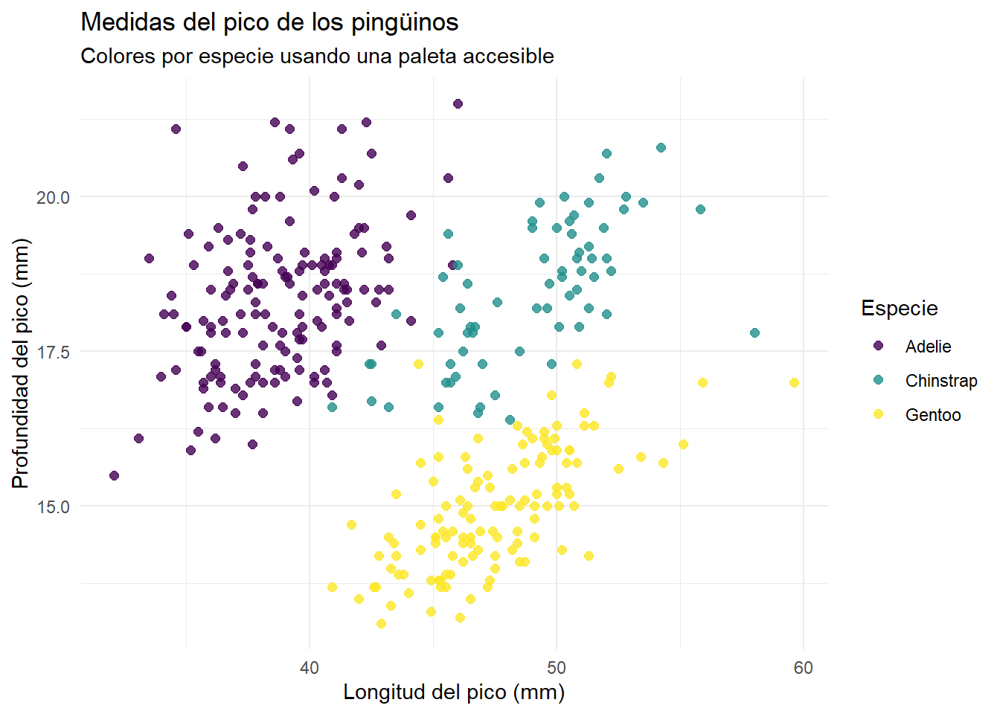
El color puede usarse para comunicar distintos tipos de información:
Objetivo
Función útil
Asignar color por grupo
aes(color = variable)
Usar un color fijo
geom_point(color = "steelblue")
Elegir colores manualmente
scale_color_manual()
Representar una variable numérica
aes(color = variable_numerica)
Crear un gradiente
scale_color_gradient()
Usar un gradiente con punto medio
scale_color_gradient2()
Usar paletas predefinidas
scale_color_brewer()
Usar paletas accesibles
scale_color_viridis_d() / scale_color_viridis_c()
Usar escala de grises
scale_color_grey()
Note
Una página que contiene muchas paletas de colores y varias paletas accesibles es la siguietne:
https://r-charts.com/color-palettes/
Forma de los puntos
La estética shape permite distinguir grupos mediante símbolos diferentes.
ggplot( penguins,aes(x = bill_len,y = bill_dep,shape = species )) +geom_point()